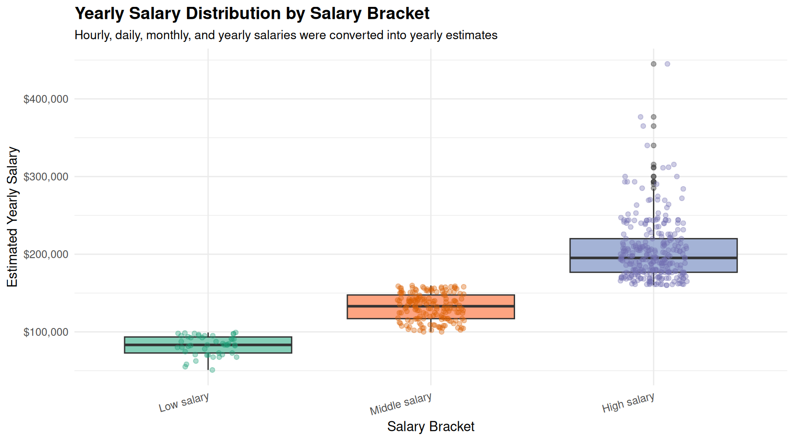
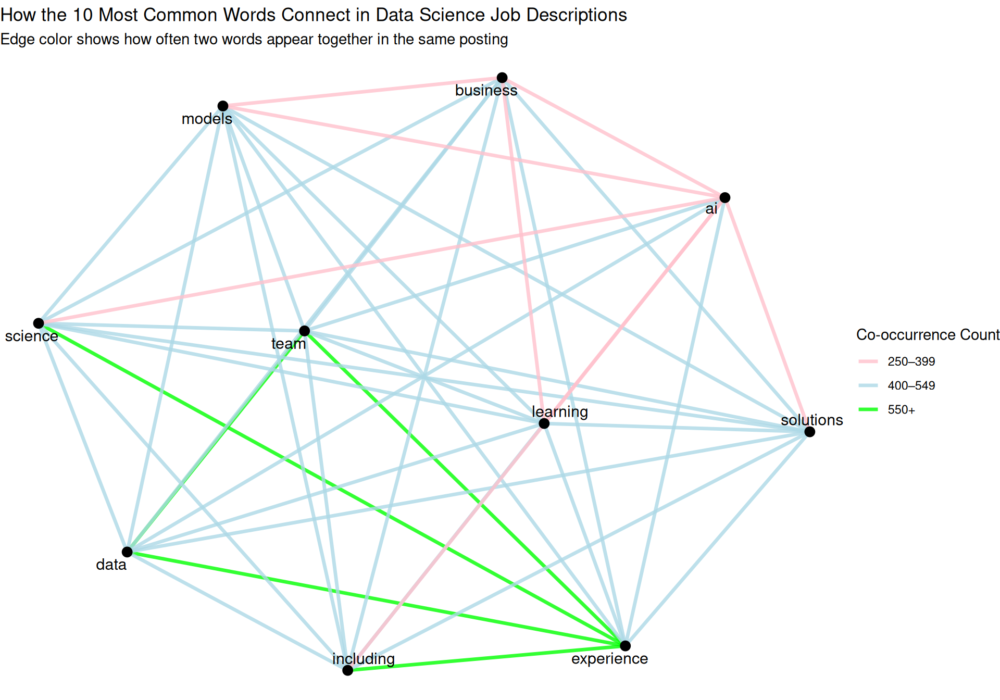
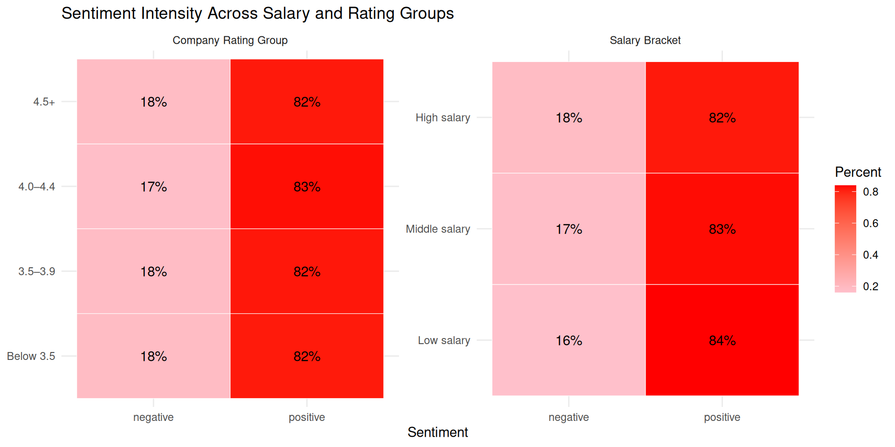
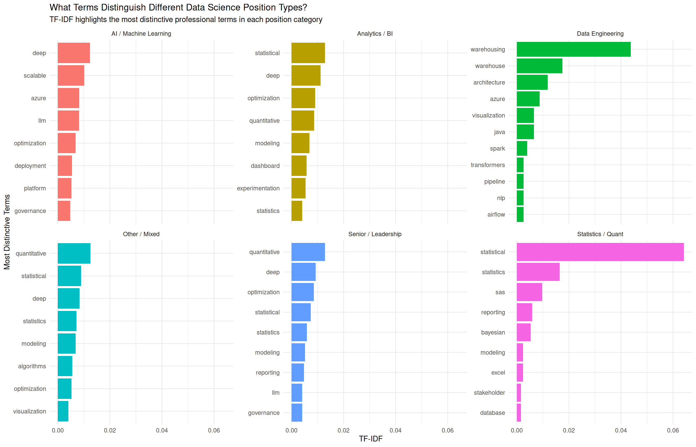

salary_unit n
1 year 447
2 <NA> 229
3 hour 53
4 month 4
5 day 2Data Science Job Market Analysis: Salaries, Ratings, and Skills
Introduction
Ever wonder why one data science job sounds completely different from another, even when the titles are similar? Some emphasize coding, others focus on analytics or AI, and salaries and company ratings are all over the place. Behind these listings are patterns that reveal what skills and qualities employers really value, and we decided to explore them.
By diving into more than seven hundred real world job postings, we cleaned and standardized salaries using regular expressions, measured the tone of descriptions with sentiment analysis, broke the text into individual words through tokenization, and highlighted the most distinctive terms for each role using TF-IDF. The result is a clear, data-driven look at how salaries, language, and skills differ across data science positions, perfect for job seekers, recruiters, or anyone curious about the hidden patterns in the tech job market.
Data Background
The analysis in this project is based on a public dataset sourced from Kaggle titled “700+ Jobs Data of AI and Data Fields 2025”, compiled by Prince Khunt. The dataset contains 735 real world job postings across a variety of AI and data related roles collected from U.S. based listings, offering a current snapshot of the evolving data science and artificial intelligence job market in 2025.
The posting includes information such as company name, company rating, job title, location, salary, employment type, and full job description text. Because the data was scraped directly from online job boards, the raw dataset reflects the messiness of real world hiring data, salaries appear in multiple formats (hourly and yearly), some listings contain missing values, and job titles often overlap despite representing different responsibilities.
This makes the dataset particularly valuable for analysis. Rather than relying on curated survey data or self reported compensation figures, these listings represent how employers are actively describing, pricing, and advertising data-focused roles in the market.
Cleaning and Standardizing Salary Data with Regular Expressions
One of the biggest challenges in analyzing job market data is that salary information is rarely standardized. Employers list compensation in a wide range of formats—hourly wages, annual salaries, monthly contracts, or salary ranges—and often use inconsistent text formatting. To make meaningful comparisons across roles, the first step in our analysis was to transform these messy salary strings into a consistent yearly salary metric.
We approached this by applying regular expressions (regex) to extract all salary-related numeric values from the raw salary text. After extraction, we separated each salary into a lower bound, upper bound, and salary unit (hourly, daily, monthly, or yearly). Every salary was then converted into a yearly equivalent using standardized assumptions: hourly × 40 × 52, daily × 5 × 52, monthly × 12. For salary ranges, we calculated the midpoint yearly salary as a single representative estimate.
Salary Bracketing for Comparative Analysis
To better understand how compensation varies across the market, we grouped each posting into one of three salary brackets:
- Low Salary: Under $100,000
- Middle Salary: $100,000 – $159,999
- High Salary: $160,000+
salary_bracket n
1 Low salary 46
2 Middle salary 167
3 High salary 293Salary Distribution Insights
The salary distribution reveals several important patterns. The table above shows that high salary postings are the most common, followed by middle and then low salary roles — suggesting that top-paying positions dominate this dataset of AI and data-focused jobs. The high salary bracket also shows substantially greater spread and variability, reflecting differences in specialization, seniority, and niche expertise. Finally, outliers within each bracket demonstrate that job title alone is often insufficient to determine market value.

Tokenizing Job Descriptions to Uncover Common Language Patterns
Tokenization breaks each job description into individual words, enabling quantitative analysis of unstructured text. Each posting was assigned a unique ID, then tokenized with unnest_tokens(). We removed stop words, purely numeric tokens, and non-alphabetic strings to retain only meaningful terms.
Identifying the Most Frequent Terms in Job Descriptions
word n
1 data 6895
2 experience 5001
3 ai 3576
4 business 2130
5 team 2116
6 learning 2043
7 science 1840
8 solutions 1600
9 including 1582
10 models 1548Looking at the most common words, “data” leads the pack, while “experience” highlights the importance of prior skills. Terms like “AI,” “learning,” and “models” point to machine learning emphasis, and “business” and “team” show that collaboration matters too.
Network Graph Analysis
The network graph shows how the 10 most common words co-occur across postings. Stronger connections (green) link terms like “experience,” “data,” and “including,” while lighter edges indicate occasional co-occurrence.

Sentiment Analysis of Job Descriptions under Salaries and Ratings
Using the Bing sentiment lexicon, we matched each tokenized word against a dictionary of positive/negative terms to quantify the emotional tone of each posting, then compared sentiment across salary brackets and company rating groups.
Grouping by Company Rating
Companies were grouped into four rating tiers: Below 3.5, 3.5–3.9, 4.0–4.4, and 4.5+.
Comparing Sentiment Across Salary Brackets
Heatmap Visualization of Sentiment Intensity

Across all salary brackets and company rating groups, the language of job postings remains overwhelmingly positive — around 82–84% of sentiment words carry a positive tone. This suggests that employers consistently frame their postings to emphasize opportunity and skills regardless of pay level or company reputation.
Using TF-IDF to Identify Distinctive Skills by Role Type
TF-IDF highlights words that are important within one group of documents but uncommon across others — revealing the skills that best distinguish one type of data science role from another.
Visualizing Distinctive Terms by Position Type

AI / Machine Learning roles emphasize tools like Azure and LLM; Data Engineering highlights warehousing and pipelines; Statistics / Quant is dominated by statistical rigor terms; Analytics / BI focuses on dashboards and optimization; Leadership blends technical and managerial vocabulary.
Conclusion
Analyzing hundreds of data science job postings has revealed clear patterns in how employers communicate expectations, priorities, and skills. Across salary brackets and company rating groups, job posting language remains overwhelmingly positive. TF-IDF analysis highlights how different roles prioritize distinct skills: AI/ML positions focus on cloud tools and deep learning, Data Engineering emphasizes infrastructure, Analytics/BI concentrates on dashboards and quantitative analysis, and Statistics/Quant underscores analytical rigor. Whether you are a job seeker, recruiter, or industry observer, this analysis demonstrates how text, sentiment, and term relevance can reveal the nuances that make each data science role unique.